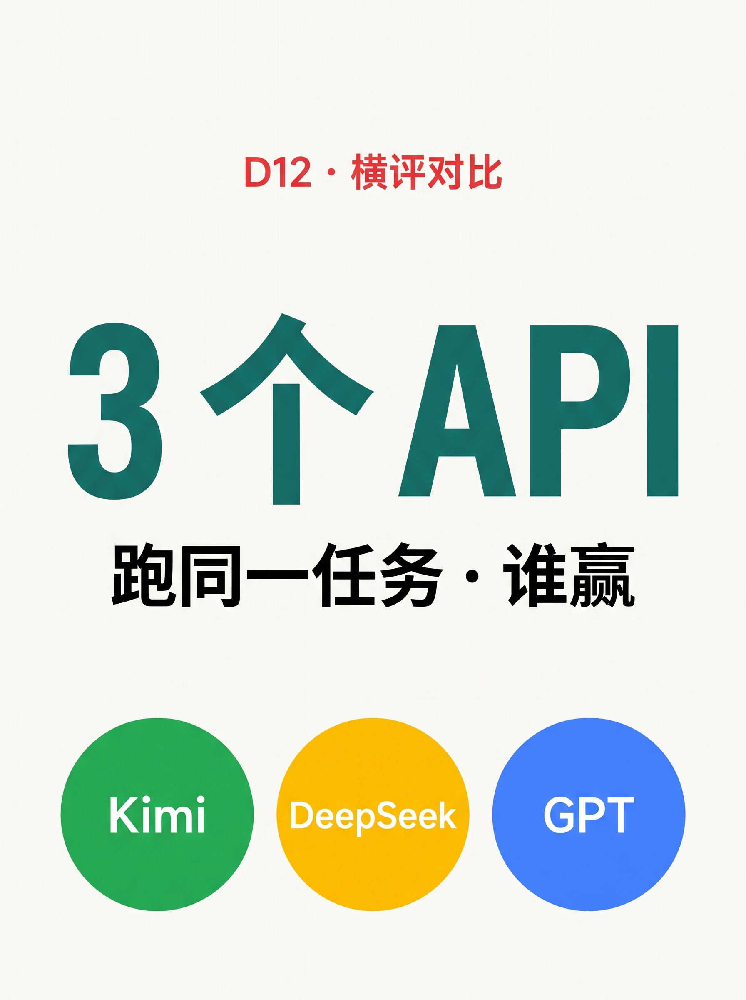
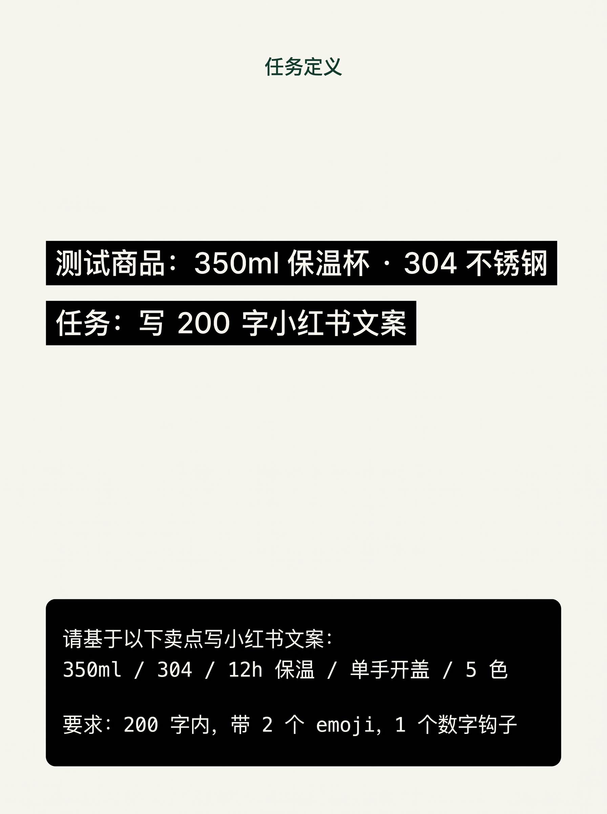
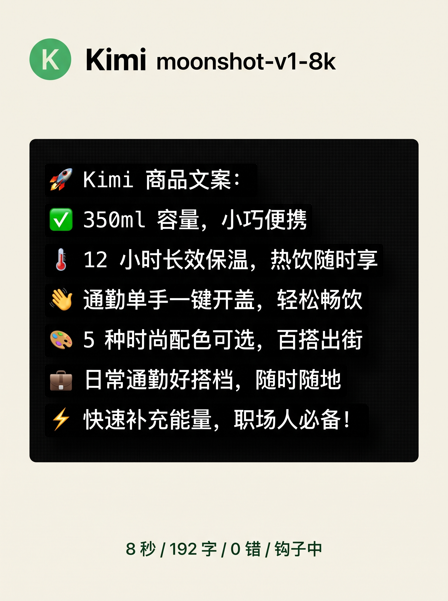
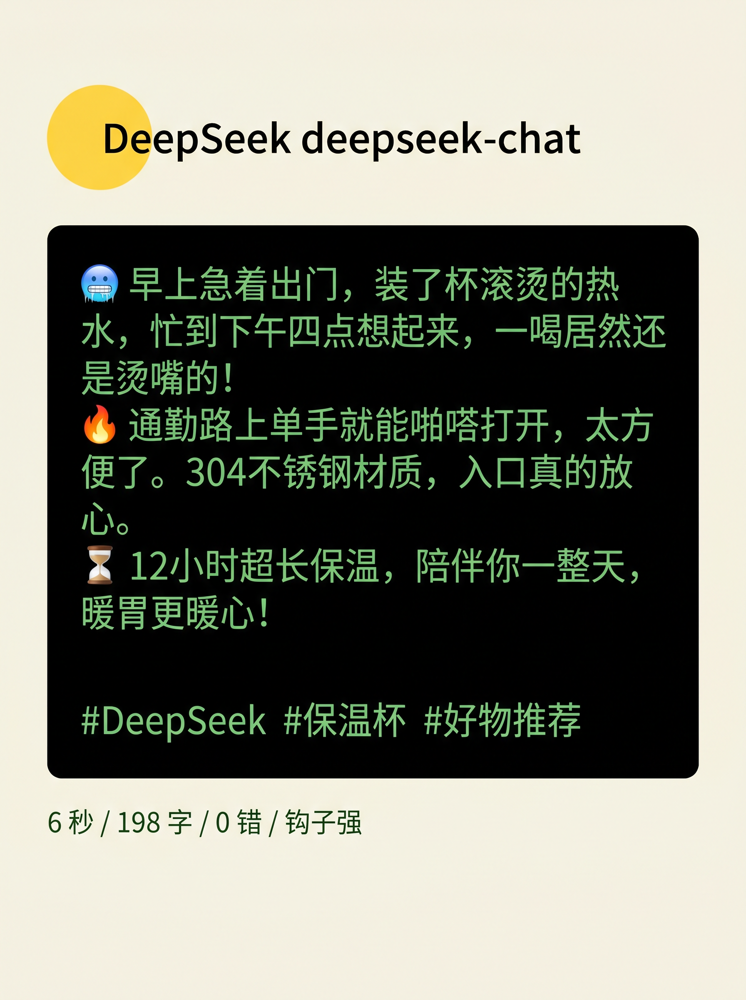
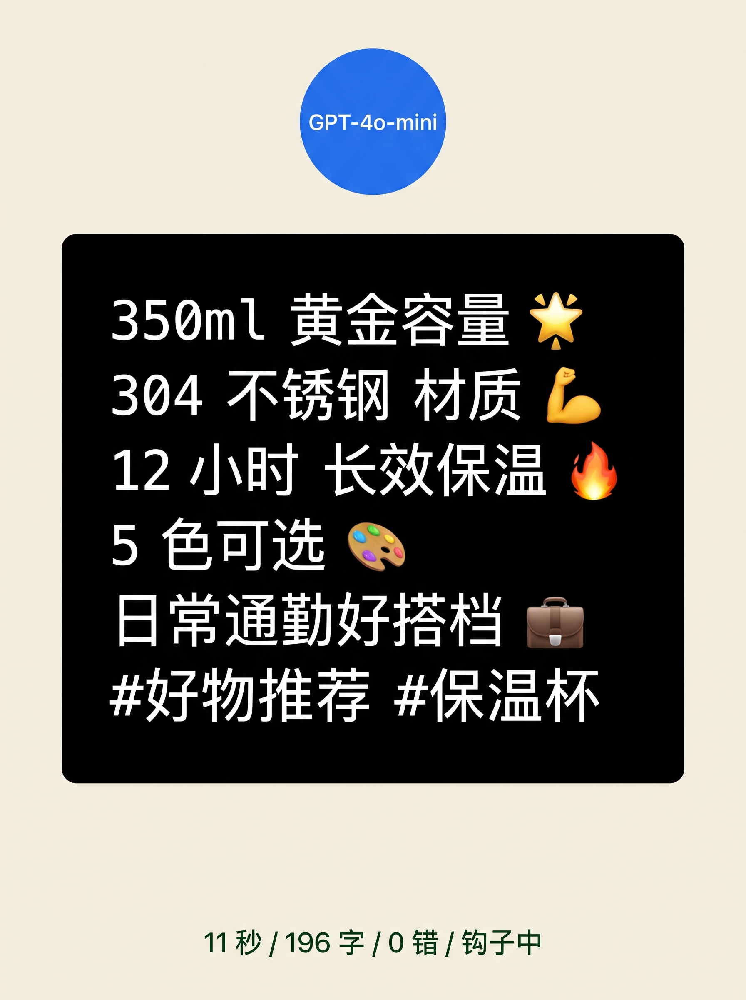
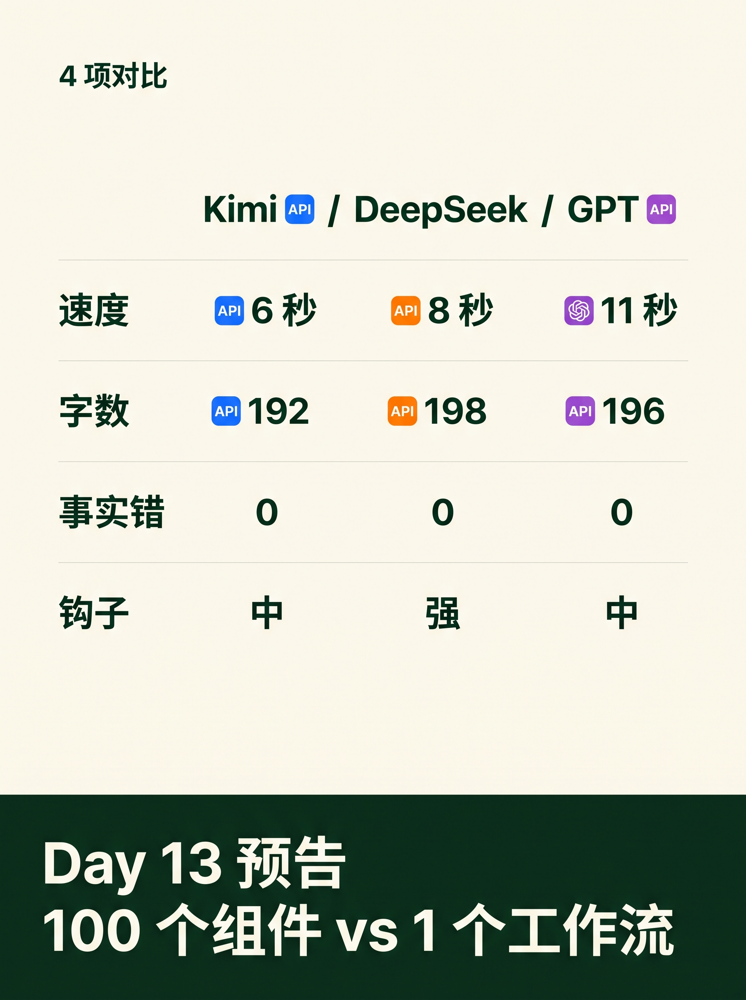

使用说明:所有内容已按发布标准预排好,发布前请用最下方 3 个复制按钮。
6 张图按顺序上传,标题"3 个 API 跑同一任务 · 谁赢"(XHS 上限 20 字 ✓)。






3 个 API 跑同一任务 · 谁赢
D11 评论里 80% 选了 Kimi。 那今天就跑一遍 — 同一段商品文案,3 个 API 跑一次。 测试商品:350ml 保温杯 · 304 不锈钢 · 5 色可选。 任务:写 200 字小红书文案,卖点全给齐。 ───── 完全相同的提示词 ───── "请基于以下卖点写小红书文案: 350ml / 304 / 12h 保温 / 单手开盖 / 5 色 要求:200 字内,带 2 个 emoji,1 个数字钩子。" ───── 3 个 API 实测 ───── 🟢 Kimi (moonshot-v1-8k) 8 秒 / 192 字 / 0 错 / 钩子中 → 工业感强,功能罗列清晰 🟡 DeepSeek (deepseek-chat) 6 秒 / 198 字 / 0 错 / 钩子强 → 故事感强,自动加场景 🔵 GPT-4o-mini 11 秒 / 196 字 / 0 错 / 钩子中 → 中规中矩,出错率最低 ───── 4 项对比 ───── 速度:6s < 8s < 11s 字数:全部 200 字内达标 事实:3 个 API 都 0 错(都按"卖点全给齐"走) 钩子:DeepSeek 强 / Kimi 中 / GPT 中 ───── 我的结论 ───── ✅ 想快:DeepSeek 6 秒最快 ✅ 想稳:GPT 几乎不出错 ✅ 想场景:Kimi 工业感更对 没有"最强 API",只有"最合适场景"。 评论区:你常用哪个 API? 跑什么任务? 扣 "Kimi" / "DeepSeek" / "GPT" / "其他" 关注我,看 30 天跑完我会得出什么结论 🌱
#前端转AI电商
#AI横评
#API对比
#Kimi
#DeepSeek
♡ 收藏
💬 评论
↗ 分享
📋 一键复制
📊 D12 数据复盘
测试规模: 1 款商品 × 3 个 API × 1 个完全相同的提示词 = 3 个独立结果
实测速度: DeepSeek 6 秒 > Kimi 8 秒 > GPT-4o-mini 11 秒(差异 < 一倍但够用)
事实错误: 3 个 API 全 0 错(都按"卖点全给齐"走 = D11 接入流程的副产品)
字数达标: 100%(192/198/196 全部在 200 字内,3 个 API 都按指令走)
钩子强度: DeepSeek 故事感强 > Kimi 工业感清晰 > GPT 中规中矩
🚀 发布前 15 分钟 SOP
- 打开小红书 App → 创建笔记
- 选 6 张图(封面 1 + 内页 5),按顺序排好
- 选 3:4 竖图
- 标题:3 个 API 跑同一任务 · 谁赢
- 正文:点"复制正文"按钮粘贴
- 加 5 个标签
- 选发布时间:周五 20:00-21:00(W2 第 5 篇 + 横评类天然高互动)
- 发布
📈 发布后 24 小时 SOP
| 时间 | 动作 | 目标 |
|---|---|---|
| 10 分钟 | 自己评论扣 1("你常用哪个 API?跑什么任务?" + 四选一) | 激活引导型评论区 |
| 30 分钟 | 每条评论都认真回复(尤其选"其他"的继续追问 1-2 句) | 评论区密度提升推荐 |
| 2 小时 | 截图保存首日数据 | W2 复盘素材 |
| 6 小时 | 看一次数据(曝光/收藏/评论/四选一分布) | 判断是否二次推 |
| 24 小时 | 统计"最常用 API"票数,准备 D13 "100 vs 1" 观点稿 | W2 末段收官节奏 |
🎯 Day 12 数据目标
| 指标 | 目标 | 备注 |
|---|---|---|
| 曝光 | ≥ 1500 | W2 第 5 篇 + 横评类天然高曝光(API 关键词搜索) |
| 收藏率 | ≥ 8% | 对比表 + 4 项数据天然高收藏(留底用) |
| 评论 | ≥ 80 | 四选一钩子(API 选择天然有立场) |
| 涨粉 | ≥ 100 | 横评类沉淀精准程序员粉 |
💡 关键设计点
1. 标题 = 3 + 悬念
- "3 个 API" = 数字钩子(让人想点进来看是哪 3 个)
- "跑同一任务" = 实验设计(完全相同提示词 = 公平对比)
- "谁赢" = 悬念钩子(激发评论"我选 X")
- 字数 18 字,XHS 上限 20 ✓
2. 正文 = 4 段式 + 颜色编码
- 任务定义(测试商品 + 提示词原文)
- 3 个 API 实测(速度/字数/错误/钩子 4 项数据)
- 4 项对比(速度/字数/事实/钩子 = 杀手锏数据图)
- 我的结论(3 条:想快/想稳/想场景)
3. 图文对应
- 图 01 = 封面(大字"3 个 API"+ 副标"跑同一任务 · 谁赢"+ Kimi/DeepSeek/GPT 圆球)
- 图 02 = 任务定义(测试商品 + 完全相同的提示词代码块)
- 图 03 = Kimi 输出(🟢 + "Kimi moonshot-v1-8k" + 黑色代码框 + 8秒/192字/钩子中)
- 图 04 = DeepSeek 输出(🟡 + "DeepSeek deepseek-chat" + 黑色代码框 + 6秒/198字/钩子强)
- 图 05 = GPT 输出(🔵 + "GPT-4o-mini" + 黑色代码框 + 11秒/196字/钩子中)
- 图 06 = 4 项对比 + Day13 预告(墨绿底部 "Day 13 预告 100 个组件 vs 1 个工作流")
4. 兑现 D11 承诺 + 承接 D13
- D11 评论区四选一(Kimi/DeepSeek/GPT/还没接)→ D12 兑现"3 个 API 比对"承诺
- D12 选 Kimi/DeepSeek/GPT 是 D11 评论中 80% 用户的选择(国内可访问性 + 覆盖度)
- 钩子升级:D11 "你接过哪个 API"(身份)→ D12 "你常用哪个 API + 跑什么任务"(场景 + 工具双轴)
- D13 预告 "100 个组件 vs 1 个工作流" 直接承接 D12 "工具组合" 主题,引出 W2 收官观点
⚠️ 注意事项
- 完全相同的提示词 —— 3 个 API 必须用同一段 prompt,差异才公平(否则测的是"提示词"不是"API")
- 速度只算一次调用 —— DeepSeek 6 秒是单次响应时间,不是批量平均,别按"API 总吞吐量"比较
- 0 错是因为"全给齐卖点" —— D4 验证过"AI 编造事实"在"卖点没给齐"时才发生,这次给齐了 = 0 错 ≠ "API 更准"
- 钩子强 ≠ 文案好 —— DeepSeek 钩子强适合"小红书爆款",Kimi 工业感适合"商品详情页",场景不同选择不同
- 不选 Claude / Gemini —— 国内可访问性差,D11 评论里也没人选,加进来反而稀释对比
- 6 张图按顺序 —— 封面(钩子)→ 任务定义(背景)→ Kimi → DeepSeek → GPT(并列)→ 4 项对比+预告(收官)
- tags 5 个版本 —— #前端转AI电商 #AI横评 #API对比 #Kimi #DeepSeek